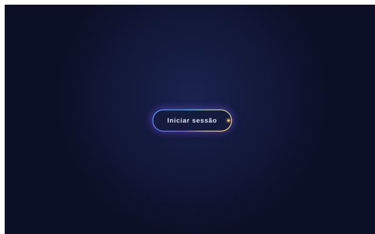
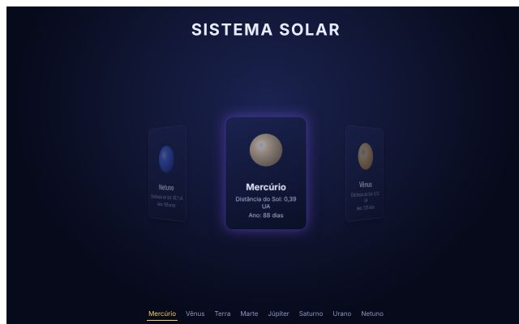
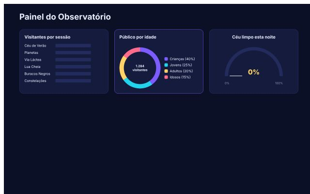
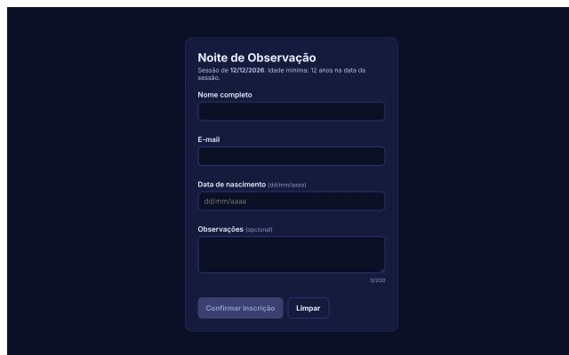
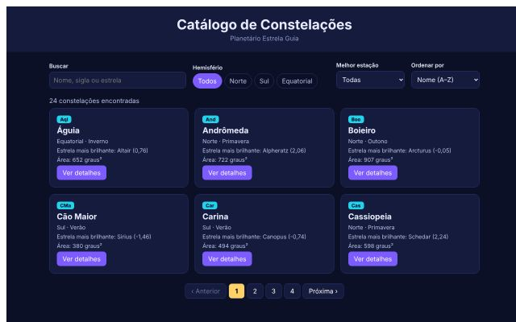
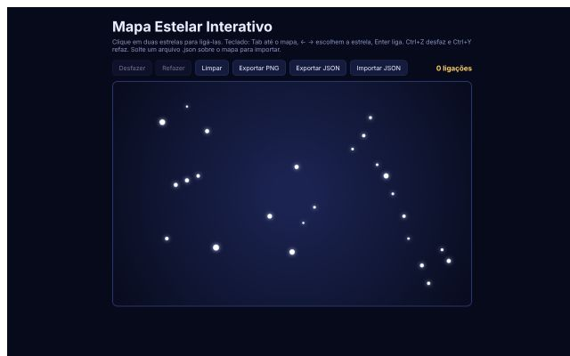
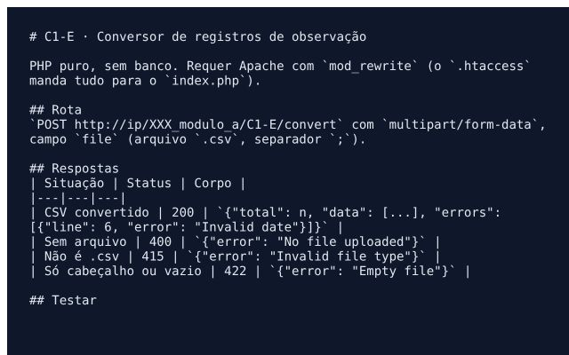
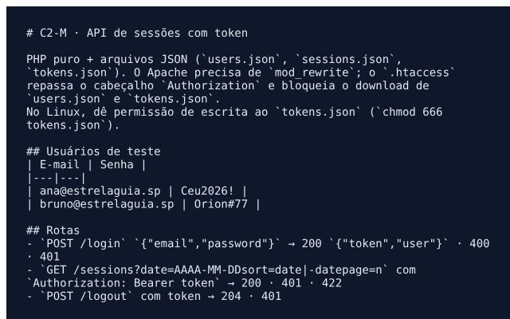
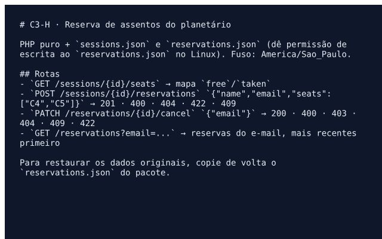

A1-EBotão Órbita
A2-MCarrossel 3D do Sistema Solar
A3-HPainel do Observatório
B1-EInscrição na Noite de Observação
B2-MCatálogo de Constelações
B3-HMapa Estelar Interativo
C1-EConversor de registros de observação
C2-MAPI de sessões com login por token
C3-HReserva de assentos do planetário